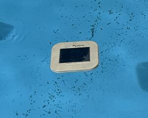
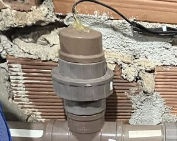
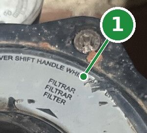
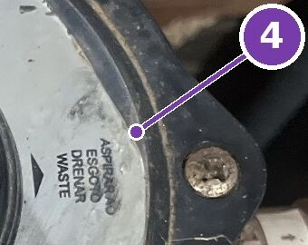
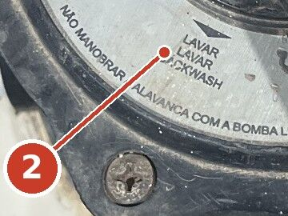
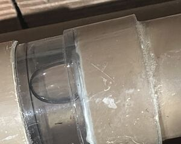
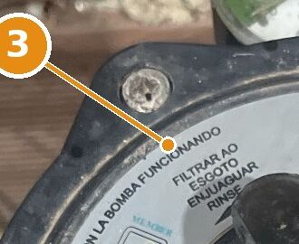
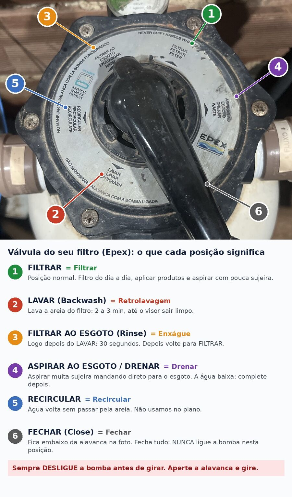

Como fazer
Testes
Alcalinidade (kit HidroAll)
- Encher o copinho até a marca de 25 ml, com água de uns 30 cm abaixo da superfície, longe do retorno.
- Pingar 5 gotas da Solução 2 (indicador, tampa rosa) e agitar.
- Pingar a Solução 1 (titulante, tampa branca) uma gota por vez, agitando e contando.
- Parar na primeira gota em que a água ficar rosa. Gotas depois disso só escurecem o rosa.
- Cada gota = 10 ppm. Ideal: 10 a 12 gotas.
Cloro e pH (estojo HidroAll)
- Mergulhar o estojo de boca para baixo a uns 30 cm e encher os dois lados até a marca.
- Lado do pH: 5 gotas de Vermelho Fenol (tampa vermelha).
- Lado do cloro: 5 gotas de Orto-Tolidina (tampa amarela).
- Fechar, virar algumas vezes e ler logo.
- Comparar contra um fundo branco (papel ou parede). Contra o céu as cores parecem mais claras.
Cobre
Seguir as instruções do kit. Ideal: 0,3 a 0,5 ppm.
Fitas de teste
Só para conferência rápida. Fita vencida não serve. Guardar bem fechada, longe de umidade e sol. Para decidir dose, vale o estojo de gotas.
Limpeza
Completar a piscina · domingo
Antes de escovar e medir, completar até o nível de sempre, alguns centímetros acima dos bocais de retorno e do bocal de aspiração. Se a água baixar até esses bocais, a bomba puxa ar e pode estragar. Também completar na segunda se aspirou em ASPIRAR AO ESGOTO / DRENAR.
Como a água é de poço, se depois do choque ela ficar amarelada ou marrom, é metal da água nova.
Escovar · domingo
Antes da medição. Paredes, depois degraus, depois fundo, empurrando a sujeira para o centro ou para o ralo de fundo.
Eletrodos dos ionizadores · domingo
Retirar, escovar com a escova que veio com o refil até tirar a crosta, enxaguar e recolocar.
 
Aspirar · segunda
Com a válvula em FILTRAR. Se tiver muita sujeira (por exemplo, depois do clarificante com água turva), usar ASPIRAR AO ESGOTO / DRENAR para não devolver a sujeira à piscina, e completar a água depois.
 
LAVAR e FILTRAR AO ESGOTO (retrolavagem) · segunda
- Desligar a bomba.
- Válvula em LAVAR:

Nº 2 na válvulaLAVAR - Ligar por 2 a 3 minutos, até a água no visor (pedaço transparente do cano em cima do filtro) sair limpa:

Em cima do filtroVisor - Desligar. Válvula em FILTRAR AO ESGOTO e ligar por 30 segundos:

Nº 3 na válvulaFILTRAR AO ESGOTO - Desligar. Válvula de volta em FILTRAR:Nº 1 na válvulaFILTRAR
Nunca girar a válvula com a bomba ligada.
Válvula do filtro: o que cada posição significa

Toque na foto para ampliar. Os números são as posições da sua válvula.
Limpa borda · sexta, antes de usar
Última tarefa da semana. Aplicar com esponja macia na faixa da linha da água. Nada abrasivo, para não riscar a fibra.
Pré-filtro da bomba
Limpar o cesto no domingo e sempre que tiver muitas folhas.
Aplicar produtos
Regra geral
Encher o balde com água primeiro, colocar o produto depois, misturar e espalhar pela superfície, com o filtro ligado. Afastar o flutuador do tablete do ponto de aplicação.
Vários produtos na mesma noite
Cada produto em balde separado, aplicado em lados diferentes da piscina, com uns 15 minutos entre um e outro.
Genclor (cloro granulado)
Dissolver no balde e jogar só a parte dissolvida. Na fibra, não deixar grânulos caírem no fundo.
Clarificante
Agitar a garrafa, medir na proveta e aplicar com o aplicador (filete fino, andando em volta da piscina) ou diluído no balde. Uso liberado 30 minutos depois.
Algicida de manutenção
Diluir no balde e espalhar, com o pH entre 7,2 e 7,6. Uso liberado 30 minutos depois. Nunca na mesma noite do Genclor, o cloro granulado (12 horas de intervalo).
pH Certo (elevador de alcalinidade)
Dissolver no balde (pode dividir em 2 ou 3 baldes) e espalhar. Corrigir o pH só 24 horas depois.